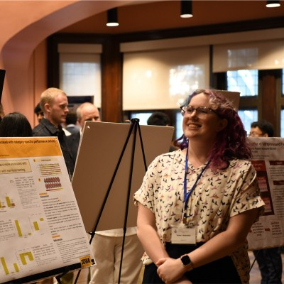

Causal Learning & Decision Making Lab
University of Pittsburgh
Lab Director: Ben Rottman
412-624-7493
University of Pittsburgh
Murdoch 546
3420 Forbes Ave.
Pittsburgh, PA 15260

Research Interests
The Science of Causal Learning
The primary research focus of the lab is causal learning - how people learn cause-effect relationships from their experiences (e.g., this new medicine I have been trying seems to work well). We are especially interested in causal learning from time series data, in which the causes and effects exhibit gradual changes over time. Another direction is studying how politically motivated reasoning affects causal judgments.
Over the past 8 years or so, our focus has primarily been on causal learning in everyday life, for example how people test whether a medicine is working or not, try new diets, or assess the efficacy of other lifestyle changes they make. To study this in a controlled way, we have recently conduced a number of smartphone experiments to study causal learning and memory over 3-4 weeks.
Causality and Research Methods
One of the primary goals of science is to uncover causal relations. We are interested in understanding how to teach causal inference in research methods classrooms to improve science education. See Resources for more info.
Decision Making
More broadly, we are interested in when and whether human decision makers make judgments that are approximately 'normative' (correct). We have studied the accuracy of decision making with regards to causally-based decisions as well as Bayesian reasoning and medical diagnosis.
Decision Making about Sustainability
Currently, I am exploring a new area of research on how we can provide decision support to people who are trying to make decisions about how to live a more sustainable life. In particular, I am focusing on decisions that people can make regarding ways to reduce energy consuption for their homes. One challenge is that there are hundreds of potential home retrofits; how can we help people decide which ones are relevant to their particular home, fit their budget, and are compatible with other goals such as comfort.
Note to Prospective Graduate Students
Graduate Students

Taylor Stalnaker
Graduate Alumni
Resources
| osRMss | open source Research Methods for the social sciences. An open educational resource that anyone teaching research methods can adapt for their own courses. |
| Causality & Regression | R Shiny app for learning about the relation between Causality and Multiple Regression. |
| PsychCloud | Tutorial and Code for making psychology experiments (or interactive websites more generally) hosted on Google App Engine and Google's Could. This is how we program web experiments. At this point, the code is out of date but is helpful to understand what can be done. |
| Causal Strength | Code for models of causal strength including Rescorla-Wagner (Rescorla & Wagner, 1972), ∆P (Jenkins & Ward, 1965), Power-PC (Cheng, 1997), and Temporal-difference (Sutton & Barto, 1987). |
Publications
2025
2024
Significance: Spacing out learning over time is one of the most robust methods to enhance later memory. Yet, much of this work is predicated on repeated exposures to identical information, which is rare in everyday life. To harness these benefits in real-world settings, we first need to characterize the efficacy of the spacing effect in the face of mnemonic variability. For isolated features of memory presented with mnemonic variability, the benefit of spacing was only observed with longer timescales of spacing intervals (hours to days) and not at short intervals (seconds to minutes). However, for more associative forms of memory, variability undermined the effects of spacing. These results challenge the existing notions of how and when spaced learning facilitates long-term memory.
Abstract: The memory benefit that arises from distributing learning over time rather than in consecutive sessions is one of the most robust effects in cognitive psychology. While prior work has mainly focused on repeated exposures to the same information, in the real world, mnemonic content is dynamic, with some pieces of information staying stable while others vary. Thus, open questions remain about the efficacy of the spacing effect in the face of variability in the mnemonic content. Here, in two experiments, we investigated the contributions of mnemonic variability and the timescale of spacing intervals, ranging from seconds to days, to long-term memory. For item memory, both mnemonic variability and spacing intervals were beneficial for memory; however, mnemonic variability was greater at shorter spacing intervals. In contrast, for associative memory, repetition rather than mnemonic variability was beneficial for memory, and spacing benefits only emerged in the absence of mnemonic variability. These results highlight a critical role for mnemonic variability and the timescale of spacing intervals in the spacing effect, bringing this classic memory paradigm into more ecologically valid contexts.
2023
Authors in different orders for different papers: Rottman, B.M., Caddick, Z., Fraundorf, S.H, and Nokes-Malach, T.M.
Cognitive perspectives on maintaining physicians’ medical expertise:
-
Reimagining maintenance of certification to promote lifelong learning.
https://doi.org/10.1186/s41235-023-00496-9
PDF
-
Acquiring, maintaining, and updating cognitive skills.
https://doi.org/10.1186/s41235-023-00497-8
PDF
-
Strengths and weaknesses of self-assessment.
https://doi.org/10.1186/s41235-023-00511-z
PDF
-
Best practices and open questions in using testing to enhance learning and retention.
https://doi.org/10.1186/s41235-023-00508-8
PDF
- Using a motivational framework to understand the benefits and costs of testing. htts://doi.org/10.1186/s41235-023-00518-6 PDF
II: Over the course of training, physicians develop significant knowledge and expertise. We review dual-process theory, the dominant theory in explaining medical decision making: physicians use both heuristics from accumulated experience (System 1) and logical deduction (System 2). We then discuss how the accumulation of System 1 clinical experience can have both positive effects (e.g., quick and accurate pattern recognition) and negative ones (e.g., gaps and biases in knowledge from physicians’ idiosyncratic clinical experience). These idiosyncrasies, biases, and knowledge gaps indicate a need for individuals to engage in appropriate training and study to keep these cognitive skills current lest they decline over time. Indeed, we review converging evidence that physicians further out from training tend to perform worse on tests of medical knowledge and provide poorer patient care. This may reflect a variety of factors, such as specialization of a physician’s practice, but is likely to stem at least in part from cognitive factors. Acquired knowledge or skills gained may not always be readily accessible to physicians for a number of reasons, including an absence of study, cognitive changes with age, and the presence of other similar knowledge or skills that compete in what is brought to mind. Lastly, we discuss the cognitive challenges of keeping up with standards of care that continuously evolve over time.
III: Is self-assessment enough to keep physicians’ cognitive skills—such as diagnosis, treatment, basic biological knowledge, and communicative skills—current? We review the cognitive strengths and weaknesses of self-assessment in the context of maintaining medical expertise. Cognitive science supports the importance of accurately self-assessing one’s own skills and abilities, and we review several ways such accuracy can be quantified. However, our review also indicates a broad challenge in self-assessment is that individuals do not have direct access to the strength or quality of their knowledge and instead must infer this from heuristic strategies. These heuristics are reasonably accurate in many circumstances, but they also suffer from systematic biases. For example, information that feels easy to process in the moment can lead individuals to overconfidence in their ability to remember it in the future. Another notable phenomenon is the Dunning–Kruger effect: the poorest performers in a domain are also the least accurate in self-assessment. Further, explicit instruction is not always sufficient to remove these biases. We discuss what these findings imply about when physicians’ self-assessment can be useful and when it may be valuable to supplement with outside sources.
IV: Although tests and assessments—such as those used to maintain a physician’s Board certification—are often viewed merely as tools for decision-making about one’s performance level, strong evidence now indicates that the experience of being tested is a powerful learning experience in its own right: The act of retrieving targeted information from memory strengthens the ability to use it again in the future, known as the testing effect. We review meta-analytic evidence for the learning benefits of testing, including in the domain of medicine, and discuss theoretical accounts of its mechanism(s). We also review key moderators—including the timing, frequency, order, and format of testing and the content of feedback—and what they indicate about how to most effectively use testing for learning. We also identify open questions for the optimal use of testing, such as the timing of feedback and the sequencing of complex knowledge domains. Lastly, we consider how to facilitate adoption of this powerful study strategy by physicians and other learners.
V: We apply a motivational perspective to understand the implications of physicians’ longitudinal assessment. We review the literature on situated expectancy-value theory, achievement goals, mindsets, anxiety, and stereotype threat in relation to testing and assessment. This review suggests several motivational benefits of testing as well as some potential challenges and costs posed by high-stakes, standardized tests. Many of the motivational benefits for testing can be understood from the equation of having the perceived benefits of the test outweigh the perceived costs of preparing for and taking the assessment. Attention to instructional framing, test purposes and values, and longitudinal assessment frameworks provide vehicles to further enhance motivational benefits and reduce potential costs of assessment.